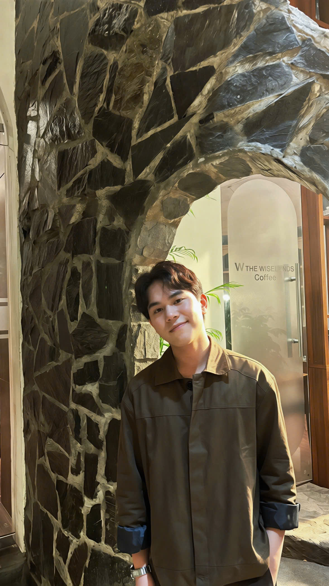

01
THE LANGUAGE
Understand
the building blocks.
Syntax, variables, data types, functions, strings, dates, arrays, and objects.
LAB 08E-COMMERCE STUDENT / JAVASCRIPT JOURNEY
I’m an E-commerce student at UEH, exploring how technology and creativity come together to build meaningful digital experiences.
A little code, a lot of curiosity.

01 / 01A LITTLE ABOUT ME 01
I’m studying E-commerce at the University of Economics Ho Chi Minh City. I’m interested in how thoughtful design and technology can make online experiences feel useful, intuitive, and human.
These labs introduced me to JavaScript as a way to bring a page to life: first learning the language, then responding to people and the browser, and finally exploring how jQuery can simplify common interactions.
THREE STEPS FORWARD 02
From language basics to richer
browser experiences.
THE LANGUAGE
Syntax, variables, data types, functions, strings, dates, arrays, and objects.
LAB 08THE BROWSER
Read and update DOM content, attributes, and styles; create or remove elements; handle events and validate forms.
LAB 09THE EXPERIENCE
Use jQuery selectors, events, DOM updates, animation, GET requests, and jqXHR responses.
LAB 10↗ Each new step builds on what came before.
THE COURSEWORK 03
Open a lab to browse its original
walkthroughs and exercises.
LAB 08
Get comfortable with the language’s core building blocks and practice writing small scripts.
LAB 09
Connect JavaScript to the page, react to events, and build confidence with browser debugging.
LAB 10
Explore concise DOM work, event handling, animation, and asynchronous requests with jQuery.
TAKING IT FURTHER 04
These foundations can support future E-commerce experiences. They’re applications I’d like to explore as I keep learning.
Syntax, variables, functions, and data structures.
Update page elements, respond to actions, validate forms.
Work with events, animations, and asynchronous data.
Checkout validation · Dynamic product details · Cart interactions · UI animation · Displaying fetched data
Possible applications of these skills — not completed projects.A PERSONAL REFLECTION 05
A draft to make my own.
Through these JavaScript labs, I learned how the language’s building blocks can work together: variables and functions organize logic, the DOM connects that logic to a webpage, and events let a page respond to people. Lab 09 shows how JavaScript can change what appears on screen, while Lab 10 introduces jQuery as another way to handle selections, interactions, animation, and requests. These ideas could support E-commerce tasks such as checking checkout forms, updating product information, or displaying data. I want to keep practicing by building small, focused interactions and improving my understanding of asynchronous code. This is an editable draft: I should add a personal example and describe which lab I found most useful or challenging in my own experience.
[Personalize before submission]